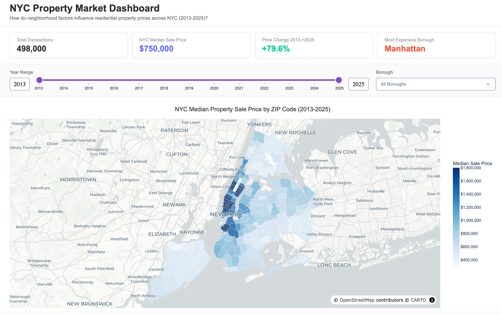
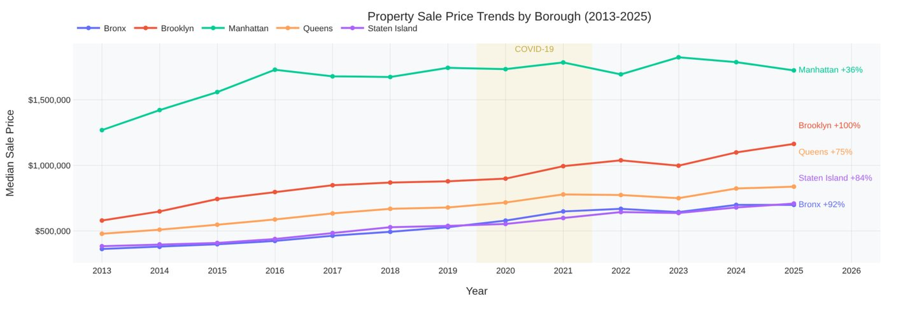
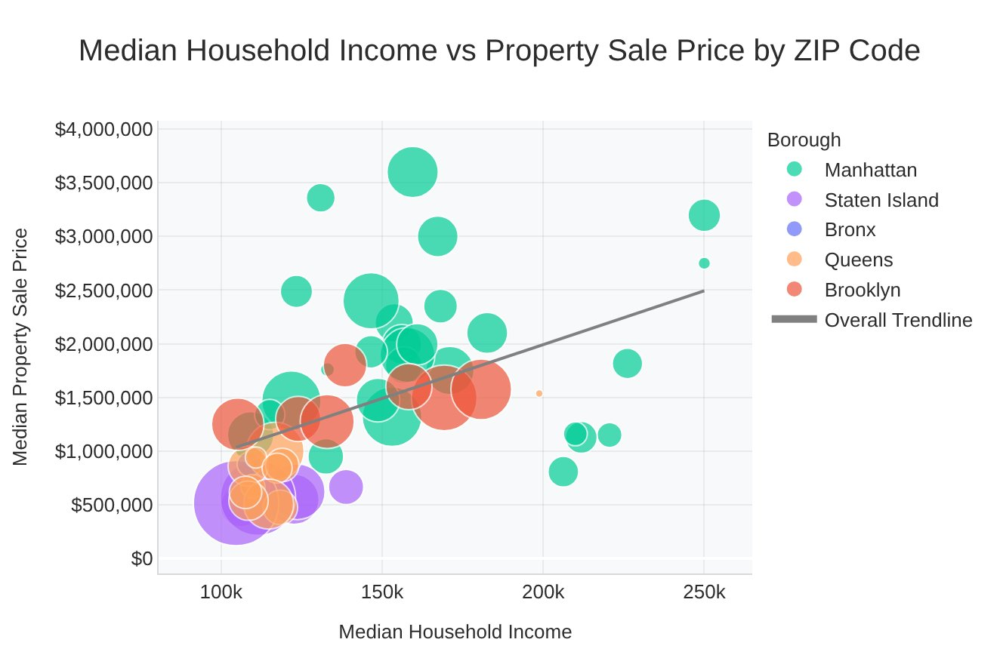
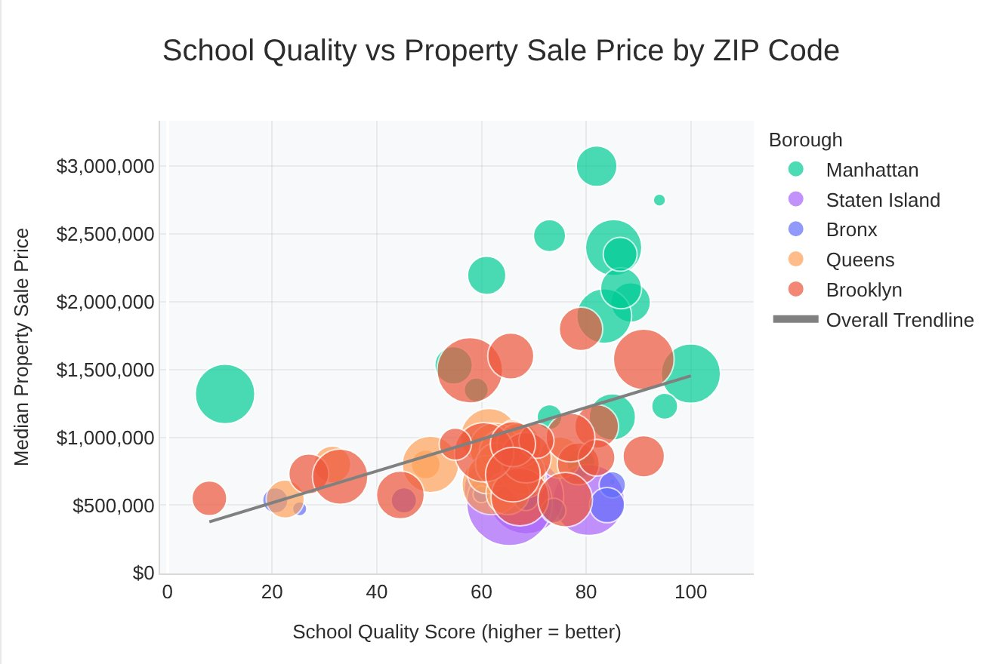
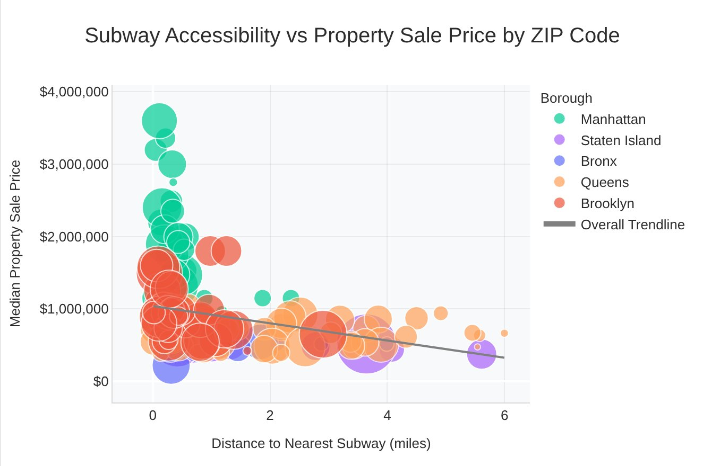
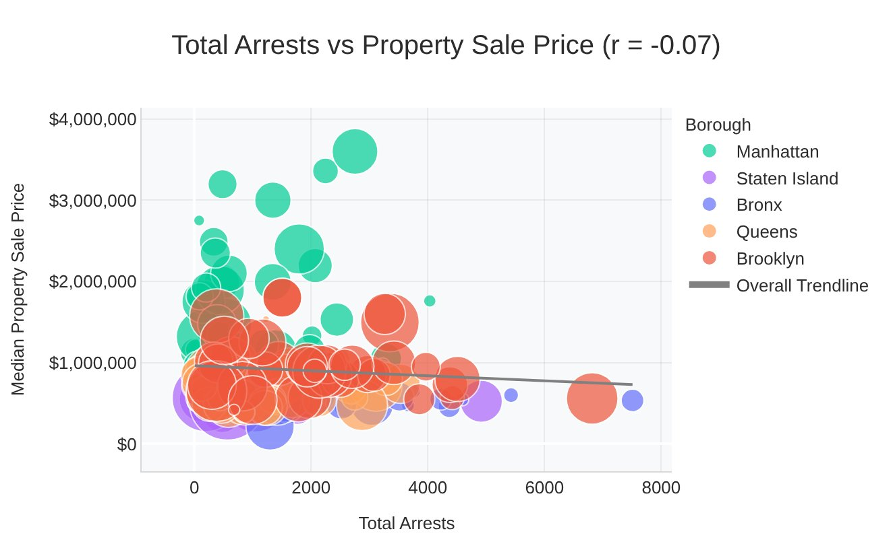
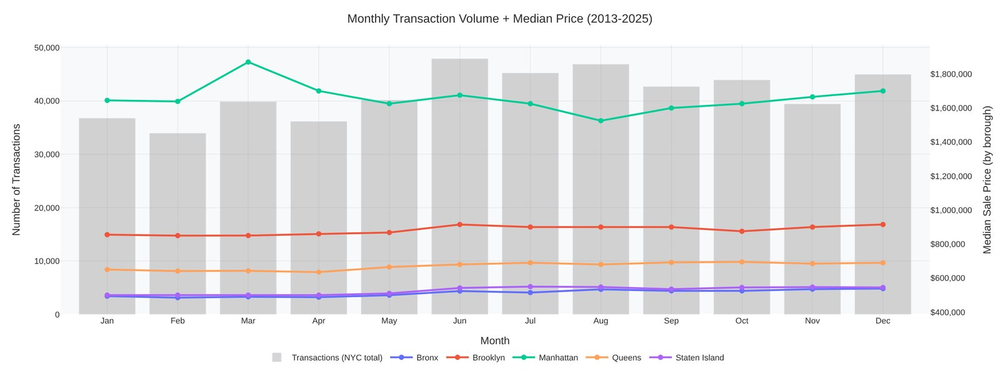
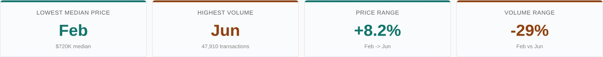

NYC Property Market Dashboard
How do neighborhood factors relate to residential sale prices across New York City from 2013 to 2025?

The question
Property prices in New York change a lot from one neighborhood to the next. We wanted to see which neighborhood factors move together with sale prices, and how prices changed in each borough over thirteen years.
We looked at four factors: median household income, school quality, crime, and distance to the nearest subway station. The dashboard lets users filter by year range, borough, property type, and crime type, and every chart updates together.
What the dashboard includes
- Summary cardsTotal transactions, median price, price change over the selected years, and the most expensive borough.
- ZIP code price mapHover any ZIP to see its median price, school score, nearest subway station, and arrests.
- Price trends by boroughA line chart that can switch between Condo, 1-Family, 2-Family, 3-Family, Rental, and Co-op.
- Four factor chartsIncome, school quality, crime, and subway distance, each plotted against median price by ZIP code.
- Crime type selectorEight crime measures, with the correlation shown in the chart title.
- Monthly patternsSeasonal sales and prices, with summary cards and controls that can follow the main filters or be set separately.
Data
| Dataset | What it covers | Source | Size |
|---|---|---|---|
| Property sales | Borough, ZIP code, year, month, sale price, property type | NYC Department of Finance | 498,000 sales |
| Household income | Median household income by ZIP code | Online open data sources | 56 ZIPs |
| Schools | School rankings with ZIP code and level | Compiled by the team from public school rankings | 178 schools |
| Crime | Arrests by ZIP code and offense type, 2025 | NYPD Arrest Data (NYC Open Data), NYPD CompStat | 192 ZIPs |
| Subway | Station locations | MTA | 496 stations |
Cleaning
- Combined 65 yearly borough sales files from the NYC Department of Finance (2013 to 2025, about 1.1 million rows) with a second sales dataset.
- Removed sales under $10,000, which are usually transfers between family members or other non-market deals, and sales over $500 million.
- Removed non-residential sales, whole-building sales with more than 10 units, and hotel and commercial condo sales.
- Removed duplicate records, which left about 498,000 residential sales.
- Standardized all ZIP codes to five digits, then joined the sales with ZIP-level household income, school rankings, NYPD arrest and CompStat crime data, and MTA subway stations.
- Kept only ZIP codes with at least 10 sales, so a few unusual sales could not drive a ZIP's median.
- Turned school rankings into a score (101 minus the average rank in the ZIP), so a higher number means better schools.
How it was built
- Spatial join: matched each ZIP code's center point to its nearest subway station with a KD-Tree (SciPy cKDTree), then stored the distance in miles. The same method assigned 279,000 arrest records to their nearest ZIP code.
- Deployment: reduced the master sales file to about 2 MB by keeping only the columns the app uses, so the app could run on Render's free tier.
- Map color scale: fixed the price range from $300K to $1.8M, so moving the year slider shows real price growth instead of rescaling the colors each time.
- Linked filters: the year slider and borough filter link 7 charts, including the map, the trend line, and the four factor charts. The monthly section can follow them or be set on its own.
- Speed: added server-side caching so repeated filter combinations load faster.
What we found
Prices rose 80% in twelve years, but not evenly
The citywide median sale price went from $540,000 in 2013 to $970,000 in 2025. Brooklyn grew the fastest and doubled. Manhattan is still the most expensive borough, but it grew the least and has been close to flat since 2016.
| Borough | 2013 median | 2025 median | Change |
|---|---|---|---|
| Brooklyn | $581,250 | $1,165,000 | +100% |
| Bronx | $364,250 | $700,000 | +92% |
| Staten Island | $385,000 | $710,000 | +84% |
| Queens | $480,000 | $839,000 | +75% |
| Manhattan | $1,270,000 | $1,725,000 | +36% |

Income matters most, crime barely shows up
At the ZIP code level, household income had the strongest link with sale prices. Total arrests had almost no relationship at all.
| Factor | Correlation with median price (r) |
|---|---|
| Median household income | +0.50 |
| School quality score | +0.39 |
| Distance to nearest subway | −0.27 |
| Total arrests | −0.07 |
Crimes per 10,000 people showed a positive correlation (+0.25), which looks backwards. It mostly comes from Manhattan, where prices are high and many arrests happen in areas with few residents, so the per-person rate is inflated. This is a reminder that a correlation on its own can mislead.




Summer is the busiest season
June had the most sales, and the citywide median price was also highest in June, at about $779,000. February was the slowest month. Sales volume also swung by year: it dropped to about 29,000 in 2020, then jumped to a peak of about 62,000 in 2022.


Limitations
- These are correlations. They show which factors move together with price, not what causes it.
- Grouping by ZIP code hides differences inside each ZIP, which can be large in New York.
- Income data covers 56 ZIP codes, so that chart has fewer points than the others.
- Arrest data is from 2025 only, while sale prices cover 2013 to 2025.
Next steps
- A regression model that controls for borough, to separate each factor's effect from the Manhattan effect.
- Matching each factor to the same year as the sales.
My role
This was a four-person team project. Jiahuan Wu and I built the dashboard together, and Victor Louie and Chhin Lama prepared the final presentation and speech script.
- Data preparation: created, cleaned, and joined the datasets. This was the largest part of the work.
- Spatial joins: ran the KD-Tree joins that matched each ZIP code to its nearest subway station and each arrest record to its nearest ZIP code.
- Dashboard: built the layout, the sections, and the filters that link the charts.
- Deployment: reduced the data file and deployed the app on Render.